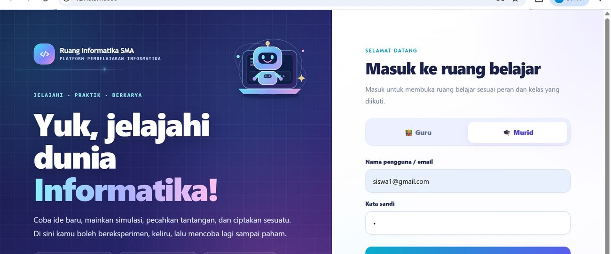
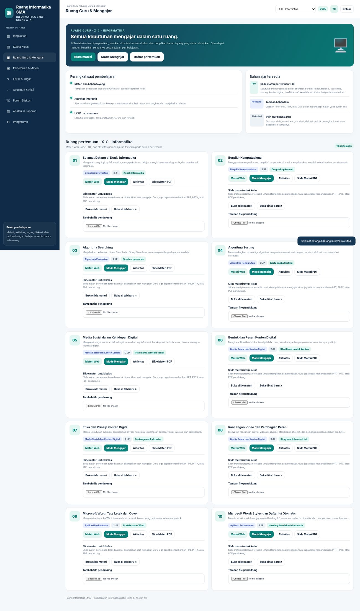
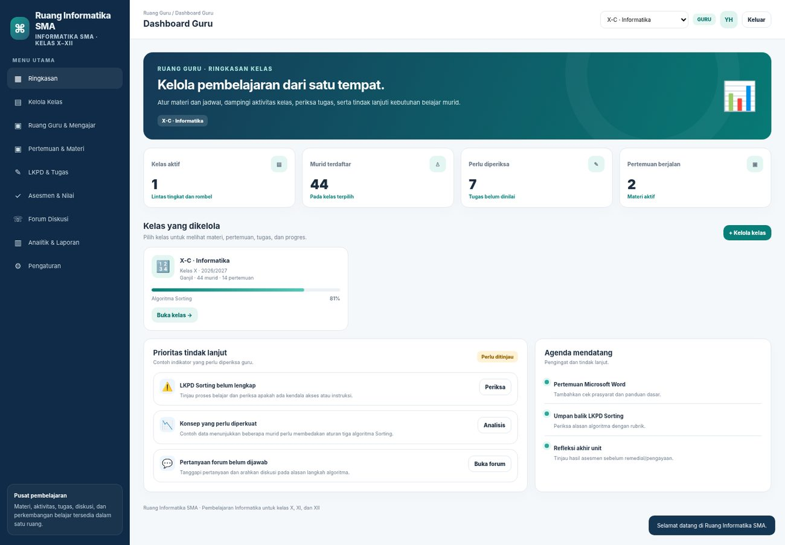

01
Identifikasi diri
Menetapkan visi pendidikan, mengenali pengalaman pembentuk diri, dan menentukan indikator perkembangan sebagai calon guru Informatika.
Saya Yadi Hapriadi, berasal dari Kabupaten Garut, Jawa Barat. Ketertarikan pada teknologi dan pendidikan membawa saya menempuh S1 Pendidikan Teknologi Informasi di Institut Pendidikan Indonesia. Pengalaman sebagai Content Creator dan Social Media Specialist memperluas cara pandang saya terhadap komunikasi digital. Melalui PPG Informatika Universitas Pendidikan Indonesia dan PPL di SMAN 24 Bandung, saya terus mengembangkan kemampuan merancang pembelajaran yang bermakna dan berpusat pada murid.
Pengalaman teknis dan kreatif menjadi modal; refleksi PPG mengarahkannya pada kebutuhan murid, tujuan pembelajaran, dan bukti belajar.
Dari nilai yang saya yakini, refleksi pengalaman, komitmen profesional, hingga karya inovasi, setiap tahap memberi saya cara pandang baru tentang peran guru Informatika.
Menetapkan visi pendidikan, mengenali pengalaman pembentuk diri, dan menentukan indikator perkembangan sebagai calon guru Informatika.
Menghubungkan konsep perkuliahan dengan praktik, tantangan yang ditemukan, dan perubahan yang perlu dibawa ke pembelajaran.
Mengidentifikasi kekuatan dan area pengembangan, lalu menetapkan komitmen profesional yang bisa ditinjau kembali.
Menerjemahkan refleksi tentang kebutuhan belajar Informatika menjadi rancangan awal platform yang dapat dikembangkan lebih lanjut.
Berangkat dari nilai yang diyakini, pengalaman yang membentuk, dan tanggung jawab untuk terus bertumbuh.
Pendidikan yang bermakna, inklusif, dan memberi setiap murid kesempatan untuk bertumbuh
Saya berharap pendidikan di Indonesia semakin memberi ruang bagi setiap murid untuk merasa aman, belajar secara bermakna, mengembangkan potensinya, dan menggunakan pengetahuan untuk memecahkan masalah di lingkungannya. Dalam pembelajaran Informatika, harapan itu berarti murid tidak hanya menghafal istilah atau mengikuti langkah program, tetapi memahami alasan, berani mencoba, bekerja sama, berkarya, dan memperbaiki kesalahan secara bertanggung jawab. Saya menyadari kontribusi saya dimulai dari ruang kelas yang kelak saya ampu, melalui keputusan pembelajaran yang menghargai kebutuhan dan perkembangan murid.
Menjadi guru yang berpihak pada murid, inovatif, solutif, dan adaptif
Saya ingin menjadi guru Informatika yang menguasai materi, merancang pembelajaran yang bermakna, dan menggunakan teknologi untuk mendukung proses belajar—bukan sekadar membuat tampilan menjadi menarik. Latar belakang Pendidikan Teknologi Informasi dan pengalaman di bidang konten kreatif menjadi bekal untuk merancang media serta aktivitas belajar. Pengalaman PPG dan PPL mengingatkan saya bahwa strategi yang baik tetap perlu menyesuaikan kesiapan murid, tujuan pembelajaran, dan kondisi kelas.
Kompas pribadi yang ingin saya latih dalam perjalanan menjadi guru Informatika
BISA bukan klaim bahwa saya telah menguasai semua kualitas tersebut secara sempurna. Prinsip ini menjadi arah untuk terus belajar, menerima umpan balik, dan berkembang—sejalan dengan pola pikir bertumbuh yang saya pelajari dalam PPG.
Komitmen yang dapat diamati dan dievaluasi
Saya ingin terus mengembangkan Ruang Informatika SMA bukan hanya sebagai gagasan dalam LK4, tetapi sebagai bekal profesional yang dapat saya bawa ketika mulai berkarier di sekolah. Platform ini dirancang untuk menghubungkan materi, aktivitas, LKPD, asesmen, diskusi, proyek, dan refleksi. Sebelum digunakan, rancangan perlu ditinjau kembali dan disesuaikan dengan kebutuhan murid, fasilitas, akses perangkat, serta kebijakan sekolah tempat saya mengajar nanti.
Enam pengalaman belajar tentang nilai pendidikan, pemahaman murid, pembelajaran dan asesmen, praktik mengajar, pola pikir bertumbuh, serta pembelajaran berdiferensiasi.
Saya menghubungkan pengalaman, tantangan, konsep yang dipelajari, dan perubahan yang ingin dilakukan dalam praktik mengajar.
Mata kuliah Filosofi Pendidikan dan Pendidikan Nilai menguatkan visi saya menjadi guru Informatika yang berpihak pada murid. Dalam PPL, saya perlu menentukan kapan memberi contoh, kapan mendampingi, dan kapan memberi ruang bagi murid untuk mencoba sendiri. Pengalaman itu mengingatkan saya bahwa pendidikan bukan sekadar menyampaikan materi atau mengejar nilai, melainkan menuntun perkembangan murid.
Tantangan yang saya lihat adalah menerjemahkan nilai dan filosofi pendidikan ke dalam keputusan sehari-hari, terutama ketika kelas ramai, murid melakukan kesalahan, atau target pembelajaran belum tercapai. Menjadi tegas saja tidak cukup; guru perlu memastikan ketegasannya adil, dapat dipahami, dan tidak merendahkan martabat murid. Sebaliknya, kepedulian tanpa batas dan aturan yang konsisten juga dapat membuat pembelajaran tidak terarah. Saya perlu belajar menyeimbangkan tuntutan, dukungan, dan tanggung jawab.
Saya memaknai pendidikan sebagai proses menuntun perkembangan murid secara menyeluruh. Nilai pendidikan perlu hadir dalam perencanaan, aturan kelas, bahasa yang dipilih, umpan balik, dan cara menyikapi kesalahan. Guru bukan hanya menyampaikan isi pelajaran, tetapi memberi teladan dalam tanggung jawab, menghargai perbedaan, dan membuka kesempatan murid memperbaiki diri. Pemahaman ini berkaitan dengan kompetensi kepribadian dan sosial, serta kompetensi pedagogik ketika nilai tersebut diwujudkan dalam lingkungan belajar yang aman dan berorientasi pada perkembangan murid.
Dalam praktik, saya akan menyampaikan aturan dan alasan di baliknya, menegur perilaku tanpa memberi label pada pribadi murid, serta memberi umpan balik yang menjelaskan apa yang sudah tepat dan apa langkah perbaikannya. Setelah mengajar, saya akan meninjau apakah aturan diterapkan secara konsisten dan apakah cara saya berbicara membantu murid kembali belajar. Dengan cara itu, nilai pendidikan tidak berhenti sebagai pernyataan ideal, tetapi menjadi kebiasaan yang dapat dievaluasi.
Mata kuliah Peserta Didik dan Pemahamannya menguatkan visi saya menjadi guru Informatika yang adaptif. Murid datang dengan kesiapan, pengalaman, minat, kebiasaan, dan rasa percaya diri yang berbeda. Dalam Informatika, perbedaan tersebut tampak pada cara murid membaca instruksi, menafsirkan algoritma, menggunakan aplikasi, atau menjelaskan alasan di balik suatu langkah. Perbedaan bukan tanda tetap bahwa murid tidak mampu, tetapi informasi bagi guru untuk menentukan titik awal dan dukungan yang sesuai.
Tantangannya adalah menghindari asumsi bahwa penjelasan yang sama akan dipahami semua murid dalam waktu yang sama. Jika saya hanya menilai produk akhir atau murid yang paling aktif berbicara, saya mungkin tidak mengetahui siapa yang masih bingung, siapa yang dapat bekerja mandiri, dan siapa yang membutuhkan contoh tambahan. Pada saat yang sama, bantuan tidak boleh membuat murid yang membutuhkan dukungan merasa diberi label atau membuat murid yang lebih siap harus menunggu tanpa tantangan.
Pemahaman terhadap peserta didik harus dibangun dari beberapa sumber: asesmen awal, observasi, percakapan, proses kerja, dan hasil tugas. Informasi tersebut digunakan untuk menyesuaikan contoh, tempo, instruksi, pengelompokan, dan tingkat bantuan. Pendekatan berpusat pada murid bukan berarti setiap murid selalu belajar dengan cara berbeda sepenuhnya, tetapi guru merancang akses yang memadai agar semua murid berpeluang mencapai tujuan yang sama. Ini merupakan bagian inti kompetensi pedagogik serta membutuhkan komunikasi sosial yang tidak menghakimi.
Saya akan memeriksa pengetahuan dan keterampilan prasyarat yang benar-benar diperlukan untuk tugas, menyusun instruksi dalam langkah pendek, memberi contoh visual, dan menyediakan waktu bagi murid untuk mencoba. Saat murid bekerja, saya akan mengamati prosesnya dan mencatat pola kesulitan yang muncul. Saya juga akan memberi tugas lanjutan bagi murid yang sudah siap serta mengecek pemahaman individu agar pekerjaan kelompok tidak menutupi kebutuhan seseorang.
Mata kuliah Pembelajaran Mendalam dan Asesmen Dasar menguatkan visi saya menjadi guru Informatika yang inovatif dalam merancang pengalaman belajar, bukan hanya dalam memilih media. Murid perlu memahami konsep, mencoba menerapkannya, mengenali kesalahan, dan menjelaskan mengapa suatu solusi bekerja atau tidak. Karena itu, asesmen perlu diselaraskan dengan tujuan belajar sejak awal dan digunakan untuk menentukan langkah pembelajaran berikutnya.
Tantangan utamanya adalah menjaga keselarasan antara tujuan, kegiatan, dan bukti pencapaian. Aktivitas yang ramai atau menarik tidak otomatis menunjukkan pemahaman, dan satu nilai akhir tidak selalu menjelaskan konsep mana yang sudah dikuasai serta bagian mana yang masih perlu dibantu. Guru juga dapat keliru jika menganggap hasil kelompok yang baik merupakan bukti bahwa setiap anggotanya telah mencapai tujuan secara mandiri.
Asesmen memiliki fungsi yang berbeda tetapi saling melengkapi. Asesmen awal memberi gambaran kesiapan; asesmen formatif selama proses memberi informasi untuk menyesuaikan pengajaran dan umpan balik; asesmen sumatif menilai capaian setelah pembelajaran. Bukti dapat berupa jawaban, praktik, hasil LKPD, penjelasan lisan, produk, atau refleksi, tergantung kompetensi yang hendak dinilai. Pembelajaran mendalam terjadi ketika murid menghubungkan konsep, menerapkan pengetahuan, dan meninjau kembali pemahamannya.
Sebelum mengajar, saya akan menuliskan indikator keberhasilan dan memilih bukti yang bisa menunjukkan ketercapaian indikator itu. Selama kegiatan, saya akan menyisipkan pertanyaan cek pemahaman, mengamati proses kerja, dan memberi umpan balik spesifik. Setelahnya, saya akan mengelompokkan temuan menjadi konsep yang sudah dipahami, miskonsepsi yang perlu diluruskan, serta keterampilan yang memerlukan latihan tambahan. Hasil asesmen harus mengubah keputusan pembelajaran berikutnya, bukan hanya menjadi angka di daftar nilai.
PPL Terbimbing menguatkan visi saya menjadi guru Informatika yang adaptif terhadap kebutuhan kelas dan umpan balik. Pada praktik awal operator aritmetika Python, saya mempertimbangkan pendekatan Inquiry dan menggunakan gambar kalkulator sebagai apersepsi. Murid mencoba program dan beberapa maju ke depan. Refleksi bersama guru pamong kemudian menunjukkan bahwa, untuk materi dan kondisi kelas tersebut, Direct Instruction lebih sesuai agar murid mendapatkan contoh serta arahan yang cukup sebelum berlatih.
Tantangannya adalah tidak terpaku pada metode yang dipilih saat membuat modul. Saya perlu menilai kecocokan metode berdasarkan tujuan dan respons murid. Saya juga datang ke PPG setelah beberapa waktu bekerja di bidang kreatif sehingga penguasaan materi Informatika dan pemahaman pedagogik perlu disegarkan kembali. Hal itu membuat persiapan bukan sekadar tugas administratif, tetapi tanggung jawab profesional agar penjelasan dan contoh yang diberikan akurat.
Praktik mengajar membutuhkan siklus perencanaan, pelaksanaan, pengamatan, umpan balik, dan perbaikan. Metode pembelajaran perlu dipilih sesuai sifat materi dan kesiapan murid; tidak ada satu metode yang otomatis paling baik untuk semua situasi. Kompetensi profesional menuntut penguasaan konsep, sedangkan kompetensi pedagogik menuntut kemampuan menjembatani konsep itu melalui penjelasan dan latihan yang sesuai. Masukan pembimbing menjadi lebih bermakna ketika diterjemahkan menjadi perubahan yang dapat diamati.
Saya akan terus mempersiapkan materi dengan membaca referensi, berlatih coding, menguji contoh program, dan memperkirakan kesalahan yang mungkin muncul. Saya juga akan meminta umpan balik secara spesifik tentang kejelasan instruksi, interaksi, dan keterlibatan murid. Pada praktik berikutnya saya akan mencoba satu perbaikan terarah, lalu menilai dampaknya dari respons dan hasil kerja murid, bukan hanya dari perasaan saya setelah mengajar.
Mata kuliah Pola Pikir Bertumbuh menguatkan visi saya menjadi guru Informatika yang solutif ketika menghadapi kesulitan. Setelah lulus S1 Pendidikan Teknologi Informasi, saya belum percaya diri untuk menjadi guru dan sempat bekerja sebagai Social Media Specialist di Larisko. Ketika kembali ke pendidikan melalui PPG, saya menyadari bahwa sebagian materi Informatika dan pengetahuan tentang pembelajaran perlu saya segarkan. Saya belajar melihat kesenjangan itu sebagai hal yang bisa ditangani melalui latihan, umpan balik, dan kemauan untuk terus belajar, bukan sebagai batas kemampuan yang permanen. Prinsip BISA saya pandang bukan sebagai label bahwa saya sudah memiliki semua kualitas itu secara tetap, melainkan arah yang perlu terus dilatih melalui usaha, strategi, dan umpan balik. Pemahaman ini sejalan dengan growth mindset: kemampuan dapat berkembang melalui proses belajar dan perbaikan.
Tantangannya adalah menerima bahwa pengalaman kerja di bidang kreatif tidak otomatis menjaga semua kompetensi mengajar tetap terasah. Saya perlu mengakui area yang belum kuat, mengatur waktu untuk belajar, dan memastikan usaha belajar tidak hanya berupa membaca cepat atau membuat slide. Saya juga perlu menghindari pola pikir bahwa media menarik sudah cukup; kualitas pembelajaran tetap bergantung pada ketepatan konsep, instruksi, asesmen, dan tindak lanjut.
Pola pikir bertumbuh bukan sekadar berpikir positif atau terus berusaha tanpa arah. Perkembangan terjadi ketika seseorang mengenali kesenjangan, memilih strategi belajar yang tepat, menggunakan umpan balik, berlatih, dan memeriksa hasilnya. Sebagai calon guru, saya perlu mencontohkan sikap tersebut kepada murid: kesalahan merupakan informasi tentang bagian yang perlu dipelajari, tetapi tetap membutuhkan usaha terarah dan tanggung jawab untuk memperbaikinya.
Kebiasaan yang akan saya pertahankan adalah membaca ulang materi sebelum mengajar, mencari referensi tepercaya, berlatih coding, menyusun PPT sambil mendalami isinya, dan berdiskusi dengan pihak yang lebih berpengalaman. Saya akan membuat catatan singkat tentang pertanyaan yang belum mampu saya jawab dan menyelesaikannya sebelum pertemuan berikutnya. Saya juga akan mengevaluasi apakah persiapan itu meningkatkan kejelasan penjelasan dan kualitas contoh, bukan hanya memperpanjang waktu persiapan.
Mata kuliah Pembelajaran Berdiferensiasi menguatkan visi saya menjadi guru Informatika yang adaptif. Di kelas X-C, perbedaan kesiapan tampak ketika murid membaca instruksi, menggunakan aplikasi, dan menyelesaikan praktik Word maupun algoritma. Pengalaman ini mengingatkan saya agar tidak menyamakan perlakuan dengan keadilan: tujuan belajar tetap jelas, sementara contoh, tempo, bantuan, atau cara berpartisipasi dapat disesuaikan dengan kebutuhan murid.
Penjelasan dan tempo yang sama tidak selalu memberi akses belajar yang setara. Ketika keterampilan prasyarat belum dikuasai, murid dapat tertinggal meskipun memahami tujuan tugasnya.
Pembelajaran berdiferensiasi mempertahankan tujuan belajar sambil menyesuaikan dukungan, proses, contoh, dan kesempatan berlatih berdasarkan kesiapan serta kebutuhan murid.
Saya ingin menggunakan cek prasyarat, panduan visual bertahap, latihan dasar dan pengayaan, serta umpan balik yang membantu murid mengetahui langkah berikutnya. Materi digital akan dirancang agar dapat dibuka kembali sesuai kebutuhan.
Cek awal per topik dan keterampilan prasyarat; opsi materi dasar dan pengayaan.
Hasil cek awal, pola kesulitan, serta tindak lanjut guru.
Setiap pertemuan memiliki tujuan, aktivitas, LKPD, asesmen formatif, dan refleksi.
Kesesuaian tujuan dengan instrumen dan kualitas jawaban murid.
Aturan forum, umpan balik yang santun, refleksi, dan pengelolaan data secara etis.
Kualitas kontribusi, umpan balik, dan catatan moderasi.
Kesempatan memperbaiki tugas dan mencoba kembali setelah mendapat umpan balik.
Riwayat revisi dan perkembangan hasil belajar, bukan sekadar skor akhir.
Enam pengalaman belajar yang menajamkan pemahaman saya tentang PSE, asesmen lanjut, PPL mandiri, Projek Kepemimpinan, keragaman dan pembelajaran inklusif, serta pengembangan profesionalitas dan wawasan keberlanjutan.
Refleksi semester II mempertemukan pengalaman PPL, proyek, dan perkuliahan dengan perubahan keputusan pembelajaran yang ingin saya terapkan.
Mata kuliah Pembelajaran Sosial Emosional (PSE), khususnya pembahasan school well-being, menguatkan visi saya menjadi guru Informatika yang berpihak pada murid. Saya menghubungkan materi itu dengan pengalaman sebagai murid di SMPN 4 Garut. Pak Asep Kusdian saya ingat sebagai guru yang suportif dan memotivasi, sedangkan Bu Nunung Zamilah tegas tetapi tetap membuat suasana kelas nyaman. Pengalaman tersebut membantu saya memahami bahwa rasa aman, dukungan, dan kedisiplinan dapat berjalan bersama. Dalam pembelajaran Informatika, hal ini penting ketika murid bingung atau frustrasi saat menelusuri algoritma maupun menghadapi hasil praktik yang belum sesuai harapan.
Tantangan bagi guru adalah mengelola respons diri ketika kelas memiliki kebutuhan yang berbeda, menjaga batas yang jelas tanpa mempermalukan murid, serta memperhatikan murid yang tidak selalu aktif berbicara. Dalam kerja kelompok, suara murid yang paling percaya diri dapat lebih dominan, sementara murid yang lain mungkin ikut menyelesaikan tugas tetapi belum tentu merasa dipahami atau menguasai materi secara mandiri. PSE perlu hadir dalam interaksi nyata, bukan berhenti sebagai istilah pada modul.
Dalam materi PSE, gagasan school well-being membantu saya melihat kesejahteraan sekolah sebagai kondisi yang dibangun melalui rasa aman, hubungan positif, dukungan untuk belajar, serta kesempatan murid untuk merasa diterima dan berpartisipasi. Hal ini berhubungan dengan kompetensi sosial emosional—kesadaran diri, pengelolaan diri, kesadaran sosial, keterampilan berelasi, dan pengambilan keputusan yang bertanggung jawab. Pengalaman saya mengingat Pak Asep Kusdian sebagai guru yang suportif dan memotivasi serta Bu Nunung Zamilah sebagai guru yang tegas tetapi tetap menciptakan suasana kelas nyaman menjadi contoh personal tentang bagaimana dukungan dan batas yang jelas dapat berjalan bersama. Pengalaman itu saya gunakan sebagai bahan refleksi, bukan sebagai bukti bahwa kondisi school well-being di sekolah tertentu telah diukur.
Saya ingin memadukan PSE dengan kegiatan belajar, misalnya dengan memberi waktu berpikir sebelum menjawab, menyepakati aturan diskusi, membagi peran kelompok, dan meminta murid menjelaskan alasan dengan santun. Pada aktivitas yang masih berupa rancangan, seperti check-in emosi atau refleksi sosial emosional, saya akan menganggapnya sebagai strategi yang perlu diuji, bukan bukti praktik yang sudah berhasil. Setelah diterapkan, saya perlu mengamati siapa yang berpartisipasi, bagaimana kelompok menanggapi perbedaan, dan apakah murid merasa aman untuk meminta bantuan.
Mata kuliah Pembelajaran Mendalam dan Asesmen Lanjut menguatkan visi saya menjadi guru Informatika yang inovatif dalam menautkan konsep dengan karya dan bukti belajar. Pengalaman saya di bidang media sosial dan konten kreatif terhubung dengan proyek video klip di kelas X-C, mulai dari perencanaan, pembagian peran, produksi, editing, quality control, presentasi, hingga refleksi. Proyek memberi konteks autentik untuk menggunakan keterampilan digital, tetapi proses dan asesmennya tetap perlu menunjukkan apa yang dipahami serta dikuasai setiap murid, bukan hanya seberapa menarik produk kelompok.
Tantangannya adalah membedakan keterlibatan yang terlihat dari pencapaian belajar yang benar-benar terjadi. Video yang menarik belum otomatis menunjukkan bahwa setiap murid memahami etika kreator, komposisi shot, editing, atau publikasi bertanggung jawab. Demikian pula, penilaian kelompok berisiko menutupi kontribusi dan penguasaan individu. Tanpa kriteria yang jelas dan bukti dari beberapa tahap, penilaian dapat terlalu berpusat pada produk akhir.
Pembelajaran mendalam perlu menghubungkan konsep dengan penerapan yang bermakna, keterlibatan sadar, dan pengalaman belajar yang menyenangkan. Asesmen perlu diselaraskan dengan tujuan: proses dapat dipantau lewat LKPD dan observasi; pemahaman konsep lewat pertanyaan atau tes; keterampilan lewat produk dan demonstrasi; sedangkan kemampuan menerima masukan dapat dilihat melalui revisi serta refleksi. Beragam bukti lebih informatif daripada mengandalkan satu produk atau satu nilai.
Dalam proyek selanjutnya, saya akan menjelaskan kriteria keberhasilan sebelum murid mulai bekerja, menyimpan bukti proses tiap tahap, dan membedakan skor kelompok dari bukti kontribusi atau pemahaman individu. Saya akan memberi umpan balik saat karya masih dapat diperbaiki, bukan hanya setelah produk selesai. Setelah kegiatan, saya akan meninjau apakah tujuan, aktivitas, dan asesmen benar-benar selaras serta menentukan bagian materi yang perlu diajarkan ulang atau diperdalam.
PPL Mandiri menguatkan visi saya menjadi guru Informatika yang adaptif terhadap kondisi nyata murid. Pada materi Microsoft Word, saya menggunakan Google Form untuk memperoleh gambaran umum kesiapan belajar. Ketika praktik dimulai, saya bertanya siapa yang baru pertama kali menggunakan komputer dan menemukan beberapa murid masih memerlukan bantuan dasar, seperti menyalakan komputer atau menggunakan klik kanan. Pengalaman ini menunjukkan bahwa asesmen umum perlu dilengkapi pemeriksaan keterampilan prasyarat yang langsung berkaitan dengan tugas.
Saya menyesuaikan pembelajaran dengan menjelaskan dasar penggunaan komputer, mendampingi murid secara individual, melibatkan teman sebaya, dan memberikan contoh ulang. Bantuan tersebut dibutuhkan, tetapi memakan waktu sehingga beberapa materi Word harus dipercepat. Di sisi lain, pembelajaran Sorting menunjukkan hasil yang baik menurut pengamatan saya: pembagian tugas kelompok berjalan, LKPD dapat diselesaikan, dan kelompok melakukan praktik serta presentasi. Dua pengalaman ini mengingatkan saya bahwa strategi yang berhasil pada suatu materi tidak otomatis dapat dipindahkan tanpa penyesuaian ke materi lain.
Perencanaan pedagogik perlu berangkat dari tujuan, karakteristik murid, pengetahuan dan keterampilan prasyarat, serta bukti belajar yang diharapkan. Untuk Word, cek praktik singkat lebih relevan daripada hanya menanyakan pengalaman secara umum. Untuk Sorting, simulasi kartu, contoh angka, perbandingan langkah, LKPD, dan presentasi membantu membuat proses algoritma yang abstrak terlihat. Pada kedua situasi, guru tetap perlu mengumpulkan bukti pemahaman individu, mengatur waktu secara realistis, dan memberi dukungan bertahap.
Untuk praktik berikutnya, saya akan memeriksa keterampilan dasar yang langsung diperlukan sebelum tugas utama, menyiapkan panduan visual, membagi kegiatan menjadi fondasi dan tugas inti, serta menyiapkan pengayaan bagi murid yang sudah siap. Saya akan mengatur batas waktu bantuan agar target inti tidak tergeser seluruhnya, tetapi juga tidak memaksa murid melewati prasyarat yang belum dikuasai. Setelah pembelajaran, saya akan memeriksa produk dan pemahaman individu, lalu menggunakan temuan itu untuk merevisi alokasi waktu atau panduan.
Mata kuliah Proyek Kepemimpinan menguatkan visi saya menjadi guru Informatika yang solutif. Dalam proyek kelompok PPG Informatika di SMAN 24 Bandung, kami mengembangkan SIVITA (Sistem Reservasi & Buku Tamu Terpadu), website yang mengintegrasikan pencatatan kunjungan, reservasi janji temu, pengecekan status reservasi, dan chatbot AI untuk mendukung layanan Humas. Proyek juga mencakup sosialisasi dan pendampingan kepada tim Humas serta guru piket. Pengalaman ini menunjukkan bahwa solusi digital perlu berangkat dari kebutuhan pengguna dan disertai komunikasi, panduan, serta tindak lanjut.
Tantangan proyek tidak berhenti pada membuat sistem atau menampilkan fitur. Solusi dapat gagal dimanfaatkan apabila alur tidak sesuai kebutuhan, petunjuk kurang jelas, pembagian tugas tim tidak tegas, atau pengguna tidak mendapat kesempatan bertanya. Saya juga perlu menjaga agar kegiatan sosialisasi tidak langsung dianggap sebagai bukti efektivitas sistem. Kebermanfaatan perlu ditinjau dari cara pengguna menjalankan tugas, kendala yang muncul, serta masukan setelah mencoba.
Kepemimpinan kolaboratif mengharuskan tim menyepakati tujuan, memahami kebutuhan pemangku kepentingan, membagi tanggung jawab, berkomunikasi, mengelola waktu, dan melakukan evaluasi. Kompetensi sosial guru tampak dalam kemampuan bekerja bersama serta menjelaskan solusi dengan bahasa yang mudah diikuti; kompetensi profesional tampak dalam penggunaan pengetahuan teknologi untuk menyelesaikan kebutuhan nyata. Akuntabilitas proyek memerlukan dokumentasi keputusan dan bukti tindak lanjut, bukan hanya hasil akhir.
Pada proyek berikutnya, saya akan memulai dari pemetaan kebutuhan pengguna dan skenario penggunaan, menyepakati pembagian tugas serta tenggat, menguji fitur sebelum sosialisasi, dan menyiapkan panduan ringkas. Saat pelatihan, saya akan meminta pengguna mencoba langkah secara langsung dan mencatat bagian yang membingungkan. Setelah sosialisasi, saya akan mengumpulkan umpan balik dan mengamati alur penggunaan untuk menetapkan perbaikan prioritas serta menilai manfaat sistem secara lebih terukur.
Mata kuliah Keragaman dan Pembelajaran Inklusif menguatkan visi saya menjadi guru Informatika yang berpihak pada murid, termasuk murid yang tidak selalu paling cepat atau paling percaya diri. Pengamatan kelas X-C menunjukkan variasi kesiapan dan partisipasi: asesmen diagnostik kognitif memiliki 41 respons, rentang skor 3–15, dan rata-rata 12,63 dari 15; survei karakteristik melibatkan 43 murid. Sebanyak 81,4% menyatakan lebih cepat belajar ketika langsung mencoba dan 86% menyukai kerja kelompok, sementara 48,8% memberi respons tinggi pada pernyataan tentang kepercayaan diri berbicara di depan kelas. Data ini memberi konteks, bukan label kemampuan tetap bagi setiap murid.
Tantangannya adalah menggunakan data secara hati-hati dan menghindari generalisasi. Preferensi belajar tidak otomatis menunjukkan kemampuan, dan jumlah respons asesmen tidak boleh dianggap sama dengan jumlah murid terdaftar. Guru perlu memastikan kegiatan praktik dan kelompok tidak hanya menguntungkan murid yang cepat atau percaya diri. Perbedaan kesiapan juga perlu direspons tanpa memberi label permanen atau mengurangi kesempatan murid berkembang.
Pembelajaran inklusif dan diferensiasi berarti menjaga tujuan belajar sambil menyesuaikan akses, dukungan, tempo, dan bentuk partisipasi. Data diagnostik perlu dilengkapi dengan observasi serta hasil kerja. Instruksi singkat dan bertahap, contoh konkret, pilihan bekerja dalam kelompok kecil, waktu berpikir sebelum menjawab, dan bantuan dengan tingkat yang sesuai dapat mengurangi hambatan. Guru tetap perlu mengecek pemahaman individu karena partisipasi kelompok atau preferensi belajar saja tidak membuktikan ketercapaian tujuan.
Saya akan memadukan asesmen awal dengan observasi selama praktik dan cek pemahaman pada akhir kegiatan. Untuk tugas komputer, saya akan memeriksa keterampilan prasyarat; untuk algoritma, saya akan menanyakan alasan langkah dan meminta murid menunjukkan proses; untuk presentasi, saya akan memberi waktu persiapan atau opsi penjelasan yang sesuai. Saya juga akan memantau pembagian peran kelompok dan menjaga kerahasiaan catatan individual. Dukungan perlu ditinjau berdasarkan bukti apakah murid semakin mandiri dan mencapai tujuan.
Mata kuliah Pengembangan Profesionalitas Guru dan Wawasan Keberlanjutan menguatkan visi saya menjadi guru Informatika yang adaptif dan terus belajar. Perjalanan dari pendidikan teknologi informasi ke pekerjaan kreatif digital, lalu kembali menekuni pendidikan melalui PPG, mengajarkan saya bahwa kemampuan profesional perlu diperbarui sesuai kebutuhan murid dan perkembangan teknologi. Pengalaman tersebut juga menegaskan bahwa inovasi perlu dievaluasi, menerima masukan, dan dijaga keberlanjutannya, bukan berhenti pada gagasan awal.
Tantangannya adalah menjaga agar pengembangan diri tidak berhenti pada kelulusan atau penguasaan alat tertentu. Inovasi juga perlu realistis, dapat dipelihara, dan sesuai dengan kondisi sekolah serta akses murid.
Profesionalitas berkelanjutan memerlukan refleksi berbasis pengalaman, pengembangan kompetensi, etika profesi, kolaborasi, dan perhatian terhadap keberlanjutan praktik. Teknologi bernilai ketika membantu tujuan belajar dan dapat disesuaikan dengan konteks.
Saya akan menyusun target pengembangan profesional, mencatat pembelajaran dari masukan, memperbarui materi secara berkala, dan memilih solusi digital yang bisa ditinjau serta diperbaiki secara bertahap. Ruang Informatika SMA menjadi salah satu ruang untuk menerapkan komitmen tersebut.
Cek prasyarat per unit, panduan dasar, materi yang dapat dibuka ulang, dan status bantuan.
Pedagogik: mengenali kesiapan dan merancang diferensiasi.
Simulasi interaktif, langkah bertahap, LKPD yang meminta alasan, dan kuis formatif.
Pedagogik dan profesional: menyelaraskan metode dengan konsep Informatika.
Dashboard multi-kelas, kalender, status materi/tugas, analitik asesmen, serta rekap.
Profesional: menggunakan teknologi dan data untuk perencanaan tindak lanjut.
Forum per topik, pedoman komunikasi, umpan balik, refleksi, serta perlindungan data.
Kepribadian dan sosial: keteladanan, empati, tanggung jawab, dan komunikasi.
Merangkum hal yang dipelajari, komitmen saat memasuki profesi, dan arah pengembangan diri setelah PPG.
Pendidikan perlu membuka kesempatan bagi murid untuk memahami, mencoba, bertanya, merevisi kesalahan, dan mengembangkan potensi. Keberhasilan tidak cukup dilihat dari penyampaian materi semata.
Profesionalisme memerlukan penguasaan konten dan pedagogi yang terus diperbarui, integritas, refleksi, kesiapan menerima masukan, serta tanggung jawab pada kebutuhan murid.
Saya ingin menjadi guru Informatika yang tegas tetapi tidak menakutkan, disiplin tetapi memahami kondisi murid, dan kreatif tanpa kehilangan fokus pada tujuan pembelajaran. Prinsip BISA menjadi kompas untuk keputusan tersebut: berpihak pada murid, inovatif dalam pengalaman belajar, solutif terhadap kebutuhan nyata, dan adaptif terhadap kondisi kelas. Saya memandang BISA sebagai arah perkembangan, bukan tanda bahwa proses belajar saya telah selesai. Media yang digunakan harus akurat, relevan, serta menghormati privasi dan hak cipta.
Seminar Pendidikan Profesi Guru menjadi ruang untuk meninjau hubungan antara identifikasi diri, pengalaman belajar Semester I dan II, refleksi program secara keseluruhan, serta gagasan karya inovasi pendidikan. Melalui refleksi ini, saya melihat bahwa perjalanan PPG perlu dihubungkan dengan pengalaman nyata, pemahaman yang diperoleh selama program, dan perubahan yang ingin dilakukan dalam praktik mengajar.
Pengalaman belajar dan praktik PPL membantu saya menghubungkan nilai pendidikan, pemahaman murid, asesmen, serta kebutuhan pembelajaran Informatika.
Saya perlu memilih pengalaman yang bermakna dan menjelaskan perubahan cara pandang secara runtut tanpa melepaskan konteks kelas.
Refleksi berbasis pengalaman membantu menghubungkan teori dengan keputusan profesional. Gagasan inovasi perlu berangkat dari kebutuhan pembelajaran dan memiliki arah pengembangan serta evaluasi yang jelas.
Prinsip BISA akan saya jadikan kompas dalam praktik, bukan tuntutan agar saya langsung sempurna. Sejalan dengan growth mindset, saya akan membiasakan refleksi setelah mengajar, terbuka terhadap umpan balik, dan memperbaiki strategi secara bertahap. Ruang Informatika SMA juga ingin saya kembangkan sebagai bekal profesional setelah lulus PPG; sebelum diterapkan di sekolah tempat saya berkarier nanti, kebutuhannya perlu divalidasi dan rancangan perlu disesuaikan dengan karakteristik murid, fasilitas, serta konteks sekolah.
Keseluruhan proses membantu saya melihat hubungan antara identifikasi diri, pengalaman belajar, praktik PPL, dan arah pengembangan sebagai guru Informatika.
Empat kompetensi guru saling melengkapi dalam merancang, memfasilitasi, dan mengevaluasi pembelajaran Informatika.
Menganalisis kesiapan, menentukan tujuan, memilih model serta media yang sesuai, menyelaraskan LKPD dan asesmen, lalu menentukan tindak lanjut dari bukti belajar.
Menjaga disiplin yang adil, mengakui batasan, menerima masukan, menjaga etika digital, dan memperbaiki keputusan berdasarkan refleksi.
Menyampaikan instruksi yang mudah dipahami, menghargai perbedaan, membangun diskusi, bekerja bersama guru dan murid, serta membuka ruang umpan balik.
Menjaga ketepatan konten, menguji contoh dan aktivitas, menggunakan teknologi sesuai tujuan, serta terus memperbarui pengetahuan dan keterampilan.
Landasan empat kompetensi guru: UU RI No. 14 Tahun 2005 tentang Guru dan Dosen, Pasal 10. Pemetaan ini merupakan komitmen pengembangan profesional yang perlu terus dibuktikan melalui praktik dan refleksi.
Ruang Informatika SMA berangkat dari pengalaman mengajar di kelas X selama PPL. Saya ingin terus mengembangkan gagasan ruang belajar digital ini sebagai bekal saat memasuki karier guru setelah PPG, dengan penyesuaian berdasarkan kebutuhan dan kondisi sekolah tempat saya kelak mengajar.
Ruang Informatika SMA — gagasan platform pendukung pembelajaran Informatika, dengan konteks awal kelas X dan pengalaman PPL di SMAN 24 Bandung. Jika dikembangkan setelah PPG, platform ini akan saya sesuaikan kembali dengan kebutuhan murid, fasilitas, akses teknologi, dan kebijakan sekolah tempat saya berkarier.
Pengalaman selama PPL memunculkan gagasan tentang perlunya cek keterampilan dasar Word, visualisasi langkah algoritma Sorting, serta pemantauan proses belajar. Gagasan ini disusun dari refleksi pengalaman mengajar. Pemetaan kebutuhan secara formal dan validasi langsung bersama calon pengguna belum sempat dilakukan.
Sampai masa PPL berakhir, Ruang Informatika SMA belum diimplementasikan dalam pembelajaran. Pengembangannya terkendala keterbatasan waktu, jadwal PPL yang segera selesai, dan kebutuhan memprioritaskan pengajaran materi Informatika lain untuk pengambilan nilai PTS. Karena itu, LK4 ini mendokumentasikan gagasan dan rancangan, bukan sistem yang telah diuji atau terbukti berdampak. Setelah lulus PPG, saya ingin menjadikan rancangan ini sebagai bekal untuk pengembangan profesional: memetakan kebutuhan di sekolah tempat saya berkarier, memilih fitur yang benar-benar diperlukan, mengembangkan secara bertahap, lalu menguji dan mengevaluasinya sebelum digunakan secara lebih luas.
Dalam rancangan ini, saya mempertimbangkan kebaruan, kreativitas, relevansi dengan kebutuhan murid, kebermanfaatan bagi proses belajar, dan efektivitas. Evaluasi belum dilakukan karena platform belum diimplementasikan. Jika pengembangan dilanjutkan, evaluasi dapat meninjau kemudahan penggunaan, umpan balik pengguna, proses belajar, dan hasil asesmen.
Ruang belajar digital dengan akses berdasarkan peran
Ruang Informatika SMA dirancang sebagai gagasan platform untuk menghubungkan tujuan belajar, eksplorasi materi, latihan interaktif, LKPD, asesmen, diskusi, proyek, dan refleksi dalam satu alur. Sasaran awalnya adalah murid kelas X SMA/SMK pada satu unit pembelajaran Informatika. Sasaran dan fitur tersebut masih perlu divalidasi bersama calon pengguna sebelum pengembangan lebih lanjut.



Alur pertemuan, materi, aktivitas interaktif, LKPD sebagai panduan proses, kuis/asesmen, penugasan, forum, portofolio, dan refleksi.
Rancangan pengelolaan kelas dan materi, tugas, asesmen, umpan balik, forum, serta pemantauan progres dan kebutuhan tindak lanjut.
Materi dan aktivitas ditautkan pada tujuan, bukti proses dan produk, serta asesmen yang digunakan untuk menentukan penguatan atau revisi.
Tahap ini belum terlaksana secara formal. Jika pengembangan dilanjutkan setelah PPG, langkah pertama adalah mengonfirmasi kebutuhan murid dan guru di sekolah tempat saya berkarier, termasuk akses perangkat, konektivitas, kebijakan sekolah, serta prioritas pembelajaran bersama calon pengguna.
Rancangan konseptual mencakup navigasi, materi, aktivitas, dan alur inti agar setiap bagian terkait dengan tujuan pembelajaran. Tahap ini belum menjadi sistem yang berfungsi.
Tahap lanjutan yang belum terlaksana adalah mengembangkan fitur inti, mengumpulkan umpan balik pengguna, lalu meninjau kendala penggunaan, aksesibilitas, dan kejelasan instruksi.
Apabila pengembangan dilanjutkan dan memperoleh kesempatan di sekolah tempat saya berkarier, rancangan akan disesuaikan dengan konteks setempat, lalu diuji secara terbatas bersama pengguna. Bukti dari asesmen, pengamatan, dan umpan balik akan digunakan untuk menentukan apakah fitur membantu proses belajar sebelum sistem diterapkan lebih luas.
Pengembangan memperhatikan kebutuhan kelas, aksesibilitas, perlindungan data, etika konten, dan evaluasi yang dapat ditinjau melalui proses penggunaan serta umpan balik.
Saya ingin menjadi guru Informatika yang menjadikan BISA—Berpihak pada murid, Inovatif, Solutif, dan Adaptif—sebagai arah praktik dan pengembangan diri.
Prinsip tersebut akan saya wujudkan secara bertahap melalui pembelajaran yang reflektif, keterbukaan terhadap masukan, dan penggunaan teknologi yang sesuai kebutuhan. Ruang Informatika SMA menjadi salah satu bekal yang ingin saya kembangkan setelah PPG dan adaptasikan dengan sekolah tempat saya mengajar nanti.